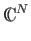

Next: Dirac Notation:
Up: State Vectors and Dirac
Previous: State Vectors and Dirac
Contents
We can describe the state of any quantum system by a state vector in a
Hilbert space. A Hilbert space is a complex linear vector space
 [18]. In the Hilbert space for a
state vector describing an N-state quantum system there will be N
perpendicular axes, which correspond to the measurable states of the
system. These are called basis states or eigenstates. In
general, the total state of a quantum system can be any complex linear
combination of the basis states. The Hilbert space for a single qubit
has two perpendicular axes, one corresponding to the 0 state, and the
other corresponding to the 1 state.
Next: Dirac Notation:
Up: State Vectors and Dirac
Previous: State Vectors and Dirac
Contents
Matthew Hayward GitHub Repository